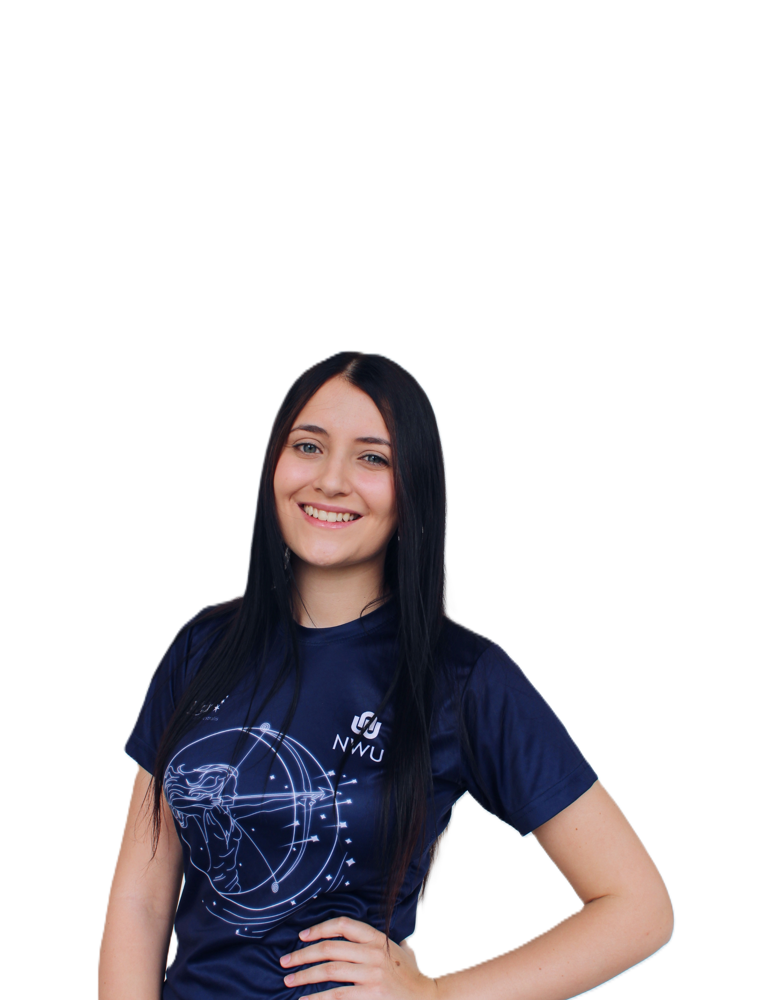
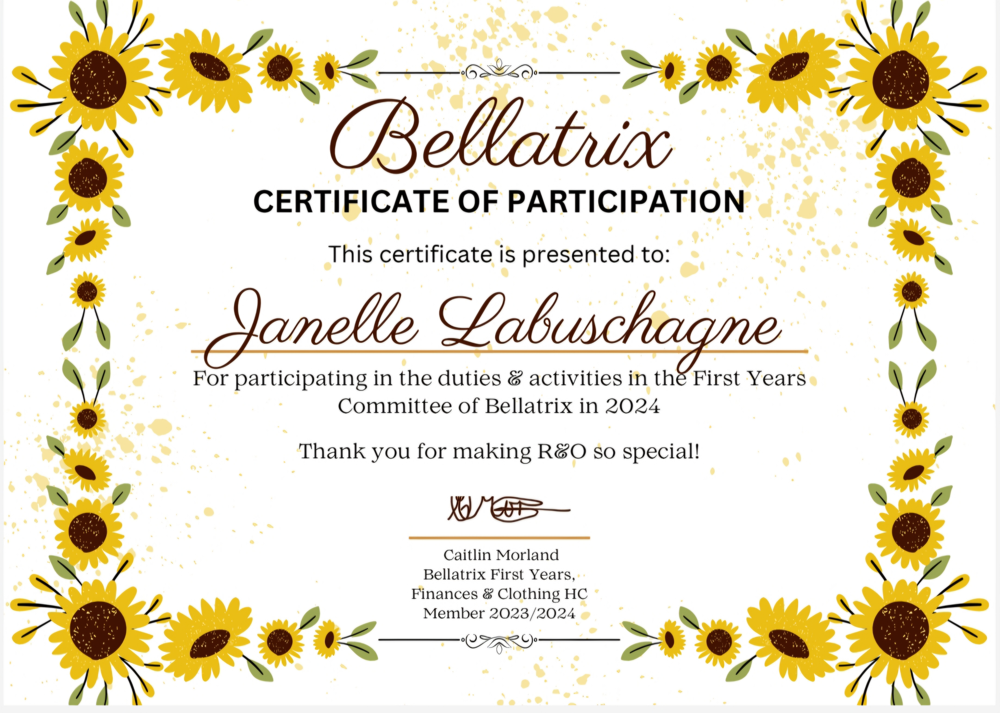
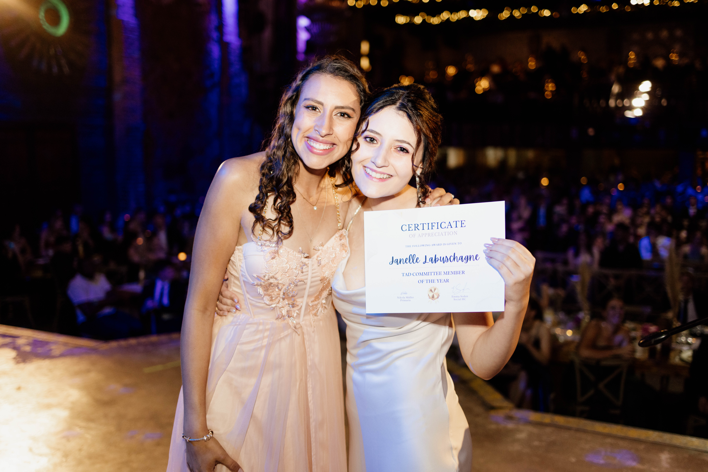

01
Tutor Activity Tracker
A C# ASP.NET Core MVC web application developed to record and manage tutoring activities, with SQL Server database integration, CRUD functionality, input validation and dashboard reporting.
View on GitHub →HI, I'M
BSc Information Technology student, hardworking by nature and an analyst at heart.

MY IT MOMENT
Someone who loves data and loves analysing data to make better decisions.
I believe the moment where I was amazed by tech was being able to code our own world into reality — something I designed, controlled and could actually interact with.
It wasn't just writing code — but analysing it, seeing it in action and designing something.
HOW I THINK
I'm curious about technology and how things work. I enjoy exploring systems, understanding how different parts connect and analysing information to see what I can learn from it. When I'm working on something, I tend to look at the details, question why things work the way they do and think about how they could be improved. I enjoy breaking down problems, finding patterns and understanding the bigger picture.
My experiences beyond academics have shaped how I work with people, take responsibility and approach different situations
Committee involvement, residence activities and experiences that taught me teamwork, responsibility and commitment.
Supporting IT students and assisting lecturers with announcements, marking, planning and keeping students informed.

Recognition for serving on the koshuis committee and contributing to residence activities.

Achieved the highest number of points in the TAD committee, reflecting the hours, effort and contribution I put into my committee work.

Teaching students as a Peer Assisted Learning supporter while assisting the lecturer with announcements, marking and planning.
MY LEARNING SO FAR
WHAT I'VE BUILT
A C# ASP.NET Core MVC web application developed to record and manage tutoring activities, with SQL Server database integration, CRUD functionality, input validation and dashboard reporting.
View on GitHub →A Java-based ATM web application built with Spring Boot, featuring user login, deposits, withdrawals, transfers and transaction history.
View on GitHub →A data-focused dashboard concept designed to turn information into something easier to understand and use for decision-making.
A document management and tracking concept designed to make organising and monitoring documents simpler and more structured.
OUTSIDE IT
I'm a HUGE gamer. People have joked that I was basically born with a controller in my hands.
I love cooking and experimenting with food, especially when I can turn an idea into something I can actually enjoy.
I'm fascinated by animals and love being around nature. There's something about observing how things work naturally that I find really interesting.
I enjoy creative things and finding different ways to turn ideas in my head into something real.
LET'S CONNECT